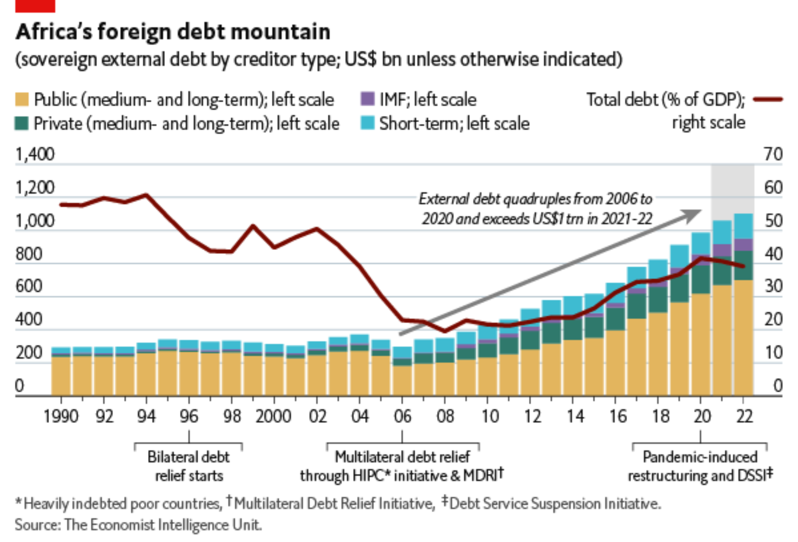

Global Finance | Balance of Payments II
EC 380 - International Economic Issues
2024
Recap
Previously
Contents of Balance of Payments
Financial Account Features
Today
International Debt
Investment Position
Limits on Financial Flows
Last time we discussed financial account flows
A trade-off exists with respect to allowing greater financial flexibility and increase exposure to international financial crises/capital flight
Countries risk becoming reliant on external sources of liquidity
A quick change in the business cycle could result in a large-scale exodus of liquidity
Asset prices drop, indebtedness intensifies
National Accounts
National Accounts + Deficit
National Income and Product Accounts (NIPA)
Gross Domestic Product (GDP): Value of all final goods and services produced inside its borders during some time period
Gross National Product (GNP) Value of all final goods and services produced by the labor, capital, and other resources of a country, regardless of where production occured
\[\begin{align*} GNP = GDP &+ \text{Foreign Income Received} \\ &- \text{Income Paid to Foreigners} \\ &+ \text{Foreign Tranfers Received} \\ &- \text{Transfers Paid to Foreigners} \end{align*}\]
National Accounts + Deficit
We can write our GNP formula as:
\[ GNP = GDP + (\text{Net Primary Income} + \text{Net Secondary Income}) \]
From standard macro models we know that:
\[ GDP = C + I + G + X - M \]

GNP is also the value of income received
National Accounts + Deficit
GNP is also the value of income received
Individuals may consume income (C), save it (S), or use it to pay taxes (T)
In reality, we do a combination of all three
\[ \text{National Income} = GNP = C + S + T \]
If we set output equal to income:
\[ C + I + G + CA = C + S + T \;\; \Rightarrow \;\; I + G + CA = S + T \]
\[ S + (T - G) = I + CA \]
Supposing we have a balanced government budget, savings are equal to total investment in the country plust current account net flows
National Savings
A nation’s savings (private plus public) are divided into two uses
Source of funds for domestic investment
- If government budgets are in deficit, overall Left-hand side goes down, and all else being equal, investment falls
- Government budget surplus increases the funds available for investment
Source of funds for foreign investment
- If CA surplus, national savings finances purchase of domestic goods by foreign users of those goods. In return, domestic economy acquires foreign financial assets
National Savings
Recall financial acocunt reflects the same amount of lending or borrowing as CA
If \(CA < 0\), financial account features net borrowing greater than net acquisition of financial assets (lending, or financial outflows)
- Negative current account \(\Rightarrow\) net borrowing in the financial account, inflow of financial capital
- Surplus countries provide savings to the rest of the world, enabling sale of more goods abroad than they buy
- Financial capital outflow is investment because it involves acquisition of assets that are expected to pay a future return
National Savings
Because of this, another name for the current account balance is net foreign investment
A negative balance implies that foreigners accumulate more home country assets than the home country accumulates abroad
The US has had a CA deficit every year since 1981. Financial crisis of 2007-2009 had a dramatic effect on savings, investment, and government budgets
Savings rose, investment fell. Federal budgets fell into large deficits. Falling import levels represented an improvement in the CA balance
Current Accounts
Current Account Deficit
All of this begs the question:
Are Current Account Deficits Harmful?
The relationship between the current account balance, investment, and total national savings is an identity
It does not tell us why economy runs CA deficit or surplus
\[ S + (T - G) = I + CA \]
We cannot say CA is in deficit because saving is too low any more than we can say it is because investment is too high
Current Account Deficit
It is a general tendency in the media and public discourse to interpret a CA deficit as a sign of weakness and harmful to the nation’s welfare
A deficit enables more investment than would be possible otherwise (higher investment \(\Rightarrow\) higher living standards)
Capital inflows associated with current account deficits can be thought of as an implicit vote of confidence by foreigners
Current Account Deficit
For example, between 1980 and 1991, Japan invested over $25 billion of trade surplus in US manufacturing
By the early 90s, they were employing more than 100,000 US workers. Investment came during major domestic layoffs.
Japanese firms acquired capital, built new plants with Japanese savings
During the US CA deficits of the 1990s, foreign investors continued to pour in capital, enabling increased productivity despite declining savings rate
CA deficit enabled more investment than was possible otherwise
Current Account Deficit
CA deficits can also generate problems
Capital inflows that occur with CA deficit increase the stock of foreign-owned assets in the home country
- Home country is now far more exposed to foreign policy/foreign business cycle conditions
- A sudden change in investor expectations about the home country’s future or their country’s prospects can lead to a sudden surge in capital outflows
- In a worst-case scenario, capital flight is followed by a depletion of international reseves and a financial crisis
Current Account Deficit
This is an experience shared by a number of developing countries since the 1980s
Deficits allow countries to invest more, huge opportunity for developing countries where investment capital is scarce
International financial crises, like biological diseases, tend to be contagious
When Mexico slipped into the peso crisis in late 1994 and early 1995, economists began to write about a “Tequila Effect” on Latin America.
When Thailand’s currency lost a large share of its value in 1997, media reported the crisis spreading across East Asia.
In both cases, the size of the CA balances were not good predictors of whether it was drawn into the crisis
International Debt
International Debt
CA deficits financed through inflows of financial capital
Capital inflows take different forms, from direct investment to purchases of stocks, bonds, and currency, to loans
Loans from abroad add to a country’s stock of external debt and generate debt service obligations
External debt is defined as a debt that must be paid in a foreign currency
International Debt
When debt service becomes an unsustainable burden, it holds back economic development
International Debt
Most countries, rich and poor, have external debt
In high-income countries, debt service is rearely an issue
Usually relatively small compared to the size of the economy.
They are able to borrow in their own currencies
Low- and middle-income countries are another matter
- Size of the external debt burden can easily be unsustainable, given the economy’s ability to make interest payments and to repay the principle
International Debt
Unsustainable debt occurs for many reasons
Sometimes, countries are dependent on exports of one or two basic commodities such as copper or coffee
Shock of a sudden drop in world commodity prices reduces value of exports and generates unexpectedly large current account deficits
In other cases, countries experience natural disasters
Corruption can also play a role, as autocrats empty out national coffers
Even electoral politics may be a factor. When officials try to gain support through unsustainable expenditures targeted at important constituents
International Debt
Drawbacks of International Debt
Worsens budget position by adding replayments made to outsiders
- It reduces the availability of public funds for important domestic needs such as infrastructure, schools, and health care
- In addition, many examples of excessive debt burdens that have spiralled, intensified, and spread economic crises
Summary
- National Accounts and CA balance are interconnected
- Deficit is not a sign of economic/geopolitical weakness
- A deficit implies borrowing from abroad, but investments can be very fruitful
EC380, Lecture 08 | Balance of Payments II